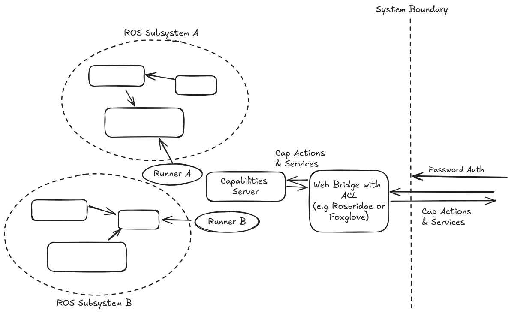

|
Capabilities2 0.1.2
|
A side effect of adding skill entities to a ROS network is that logic can be added to control access to these skills. Here is a proposal for how this could be implemented.
Rosbridge from Robot Web Tools provides an authentication mechanism that can be used to secure the ROS network. This can be used to authenticate a user.
Rosbridge also provides an access control mechanism that can be used to control access to topics. Once a user is authenticated, they could initially access the capabilities services to learn what the robot can do. By doing this the user does not know the specific topics that the robot uses, but they can still interact with the robot.
Further the capabilities could be restricted based on the user's role. This could be done by creating a role-based access control (RBAC) system. This could be implemented by creating a capabilities service that is aware of the user's role. The capabilities service could then provide a list of capabilities that the user is allowed to use. An implementation could follow a plugin architecture to ensure good separation of concerns.
Once the user decides on a capability that they are authorised to use, the capabilities service could update the rosbridge access control to allow the user to access the topics that the capability uses for the duration of the capability. This adds a time-based access control mechanism to the system.
To prevent internal topics from leaking into the rosbridge access control, ROS2 security could be used to secure the internal topics. This would ensure that only internal connections can access internal topics, and capabilities can only add externally safe topics to the rosbridge access control.
